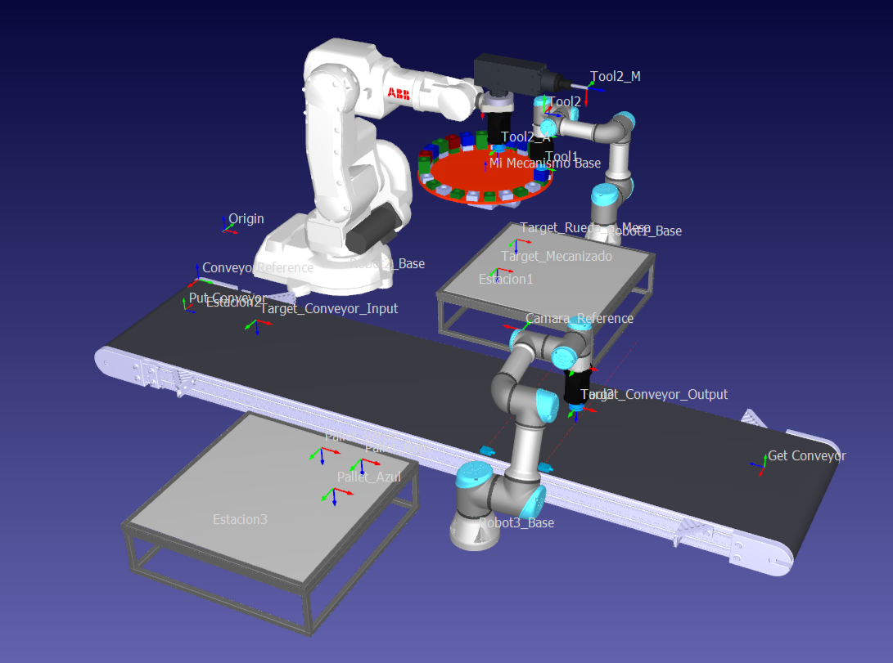

Multi-Robot Manufacturing Cell — RoboDK

Overview
A complete multi-station robotic manufacturing cell built in RoboDK, coordinating 3 industrial robots in a synchronized production loop. A UR3e picks colored cubic workpieces from a rotating wheel feeder; an ABB IRB 140 performs CNC machining and loads pieces onto a conveyor belt; a second UR3e uses a virtual camera and OpenCV to detect piece color and orientation, then sorts them into color-coded pallets using an automatic Palletizer. All motion, IK solving, scene setup, and vision logic are programmed entirely in Python via the RoboDK API.
| Layer | Component | Role |
|---|---|---|
| Simulation platform | RoboDK · Python (robolink / robodk) | 3D environment, robot kinematics, IK solver, program execution |
| Station 1 — Feeder | UR3e · vacuum gripper (Tool1) | Picks colored cubes from rotating wheel; advances wheel 15° per cycle via TCP IK |
| Station 2 — Machining | ABB IRB 140 · dual tool (gripper + spindle) | Picks, machines (5-waypoint trajectory), applies random Z-spin, drops onto conveyor |
| Station 3 — Palletizer | UR3e · RobotiQ EPick vacuum gripper | Vision-guided pick: detects color & angle via OpenCV HSV + minAreaRect, compensates
wrist (J6), sorts into 3 color pallets |
| Computer Vision | OpenCV · NumPy · RoboDK virtual camera | Captures frame from virtual camera; HSV masking → color ID; minAreaRect →
orientation angle |
| Conveyor belt | Python simulation loop running in a background thread | Real-time object tracking, drop detection, fall-off handling running in background thread |
Master Orchestration Pipeline
Init — pose initializer sets all robot and object transforms · Background — conveyor controller & vision-sort routine start concurrently · Loop — feeder routine picks from wheel → machining routine processes & loads belt → repeat · Vision sort — Station 3 captures frame, detects color & angle, compensates wrist, palletizes
Station 1 — Wheel Feeder (UR3e — Robot 1)
A rotating wheel mechanism holds colored cubic workpieces arranged radially. Robot 1 (UR3e) picks one cube at a time from the wheel using a vacuum gripper, placing it on a work table via inverse-kinematics-based TCP positioning.
- Wheel advance — the feeder wheel rotates 15° after each pick to present the next piece.
- IK positioning — the robot's tool-center-point is solved dynamically against a target frame at each pick and place location.
- Pick & place — the vacuum gripper attaches the cube for transport and releases it precisely onto the work table.
- Home return — the robot moves back to its safe home configuration after every completed cycle.

Station 1 — UR3e picking from the rotating wheel mechanism
Station 2 — Machining & Conveyor Loading (ABB IRB 140 — Robot 2)
Robot 2 (ABB IRB 140) operates with a dual-tool setup: a gripper for pick-and-place operations and a milling spindle (Teknomotor ER20) for machining, switching between them as the sequence demands.
- Pick — the gripper collects the workpiece from the feeding work table.
- Machine — the robot switches to the spindle and executes a 5-waypoint milling trajectory over the piece.
- Orientation randomization — a random rotation (0°–90°) is applied to the piece before release, simulating real-world orientation variability on the belt.
- Conveyor drop — the robot re-grabs the machined piece and deposits it onto the conveyor belt at the designated entry point.

Station 2 — ABB IRB 140 machining & conveyor loading
Station 3 — Vision-Guided Palletizer (UR3e — Robot 3)
Robot 3 (UR3e) monitors virtual sensors along the conveyor and uses a virtual camera combined with OpenCV to analyze each piece's color and orientation before grasping it.
- Color detection — HSV color-space masking classifies each piece as Red, Green, or Blue.
- Angle detection — a minimum bounding rectangle fit on the piece's contour returns its orientation angle.
- Wrist compensation — the robot pre-rotates its wrist by the detected angle so the gripper aligns perfectly with the piece before grasping.
- Automatic palletizing — pieces are sorted into 3 color-coded pallets, each filled in a 4×4 grid with automatic layer advancement as rows complete.

Station 3 — UR3e sorting pieces into color-coded pallets

Full cell overview — Station 1 (Feeder) · Station 2 (Machining) · Station 3 (Palletizer)
 Full Demo
Full Demo
Multi-Robot Manufacturing Cell — Full Simulation Demo
End-to-end simulation run: Robot 1 feeds colored cubes from the wheel, Robot 2 machines them and loads the conveyor belt, Robot 3 detects color and orientation via OpenCV and sorts pieces into the correct color-coded pallets — all orchestrated by a single master Python script.
Watch on YouTube